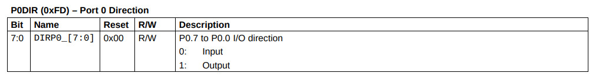
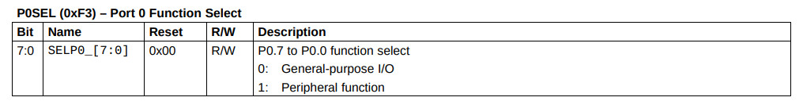
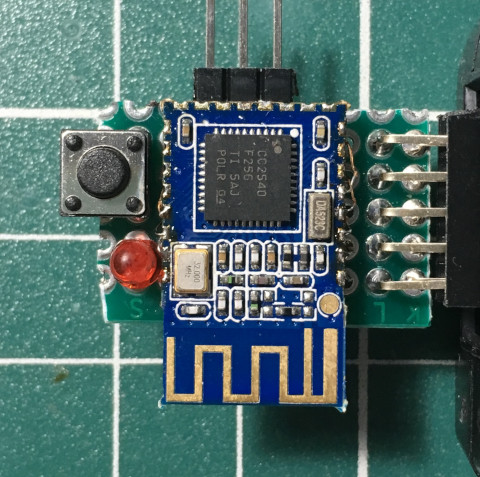
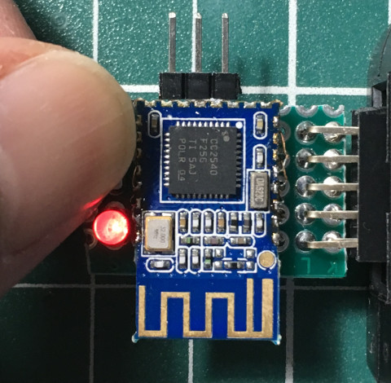

參考資訊：
https://www.ti.com/lit/ug/swru191d/swru191d.pdf?ts=1610169216449&ref_url=https%253A%252F%252Fwww.google.com%252F
Direction


p0sel set 0xf3
p0dir set 0xfd
.org 0h
jmp _start
.org 100h
_start:
mov p0dir, #0x01
mov p0sel, #0x00
loop:
mov c, p0.1
mov p0.0, c
jmp loop
.end
完成

